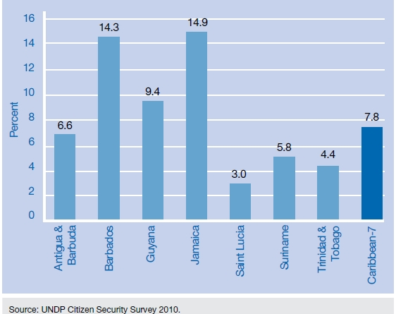
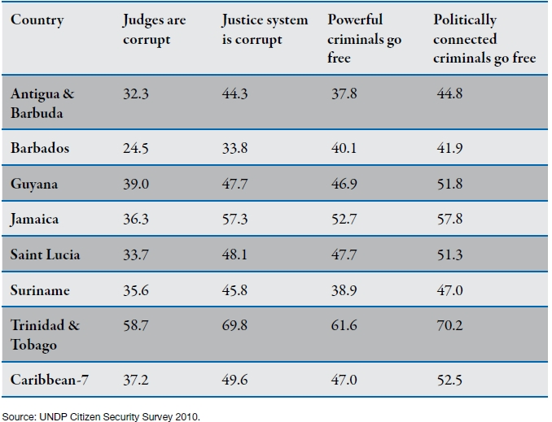

Causes and Effects of Street Gangs and Organized Crime
Causes
Social Structural Conditions
Community and social cohesion are vital as they promote the development of shared goals and provide the means for collective action. When there exists a willingness and ability to develop and achieve shared goals within a community, then cooperative efforts are promoted to define, monitor, and condemn undesirable behaviours within said community. However, if these social structural conditions are absent, then communities cannot exercise informal social control over their neighbourhoods. Consequently, these neighbourhoods start experiencing elevated levels of crime and delinquency in comparison to other communities. Table 1 illustrates this as an analysis of the data suggests that informal social control, community cohesion, and social cohesion are lower in communities with street gangs.
| Country | Informal Social Control | Community Cohesion | ||
|---|---|---|---|---|
| No Gangs | Gangs | No Gangs | Gangs | |
| Antigua&Barbuda | -0.06 | -0.42 | -0.13 | -0.71 |
| Barbados | -0.10 | -0.12 | -0.15 | -0.63 |
| Guyana | 0.15 | -0.17 | 0.15 | -0.44 |
| Jamaica | 0.31 | 0.13 | 0.41 | -0.14 |
| Saint Lucia | 0.20 | -0.31 | 0.03 | -0.57 |
| Suriname | -0.20 | -0.28 | 0.01 | -0.17 |
| Trinidad&Tobago | -0.02 | -0.32 | 0.13 | -0.39 |
| Caribbean-7 | 0.03 | -0.23 | 0.07 | -0.44 |
Source: UNDP Citizen Security Survey 2010.
Risk and Protective Factor Paradigm
Risk factors are those characteristics or symptoms that, if present, increase the likelihood that an individual will be involved in deviant behaviour. On the other hand, protective factors are those characteristics or symptoms that, if present, decrease the probability that an individual will be embroiled in problematic behaviour. While this risk and protective model has been applied for extensively to understand and develop health policy, it has only recently been utilized to achieve greater understanding of why people join gangs.
As a result, there is not much research on the association between risk and protective factors and gang membership. However, anecdotal evidence points to the fact that membership is linked to the following risk factors: neighbourhood social disorganization, neighbourhood levels of crime and drug use, lack of attachment to school, poor school performance, unemployment, poor family management, attachment to antisocial peers, and an individual’s prior involvement in delinquency and drug use.
The sole empirical study carried out thus far was done by Katz and Fox in 2010. They examined school aged-youth in Trinidad and Tobago and found that gang involvement is associated with those who (1) have parents with attitudes that favour antisocial behaviour, (2) live in neighbourhoods that are characterized by high mobility, (3) live in neighbourhoods in which handguns are widely available, (4) have been involved in antisocial behaviour from an early age, (5) have the intention to use drugs, (6) have antisocial peers, and (7) have peers who use drugs. Furthermore, their study revealed that school-related risk factors were not, in the large, significantly associated with gang involvement.
Effects

Organized crime commonly leads to drug trafficking. The resulting effects are numerous...
It was noted by local officials that "the people who are involved in moving drugs are often the same people who will use the same operation for many other illegal activities" such as money laundering and terrorism.
Local drug use problems arise as a result of the fact that the traffickers are frequently paid in product and then sell to the domestic markets. This then leads to local criminality such as youth gangs, prostitution, and violent and property crime related to the drug markets.
The proliferation of firearms is also a by-product of drug trafficking.

Street gangs impact neighbourhood safety. But is it all negative?...
While it is understandable to assume that street gangs make neighbourhoods less safe, it may not be that clear-cut. As one expects, most residents surveyed stated that gangs made their communities less safe. However, a surprisingly large share of persons in Barbados (14.3 percent) and Jamaica (14.9 percent) stated that gangs made their neighbourhoods safer. See more statistics below.

The economic performance of a country is decreased...
The crimes and corruptive influence of gangs and organized crime accounts for this. Crime has the effect of diverting a country's limited resources away from productive sectors, which can fuel economic growth and human development in terms of education and the maintenance of physical infrastructure. Resources are instead aimed at crime prevention and control initiatives.
Additionally, corruption serves to discourage positive corporate investment decisions, foreign investment, and private and public loan from abroad (see the statistics for perceptions of corruption below). Moreover, with many Caribbean countries dependant on tourism, crime and corruption limit the productivity of this sector.
The following chart shows the respondents who believe street gangs make their neighbourhoods safer in various Caribbean countries.
The following table shows the relationship between gangs and homicides in communities.

The following chart shows, in percentages, the perception of corruption across various Caribbean countries.
